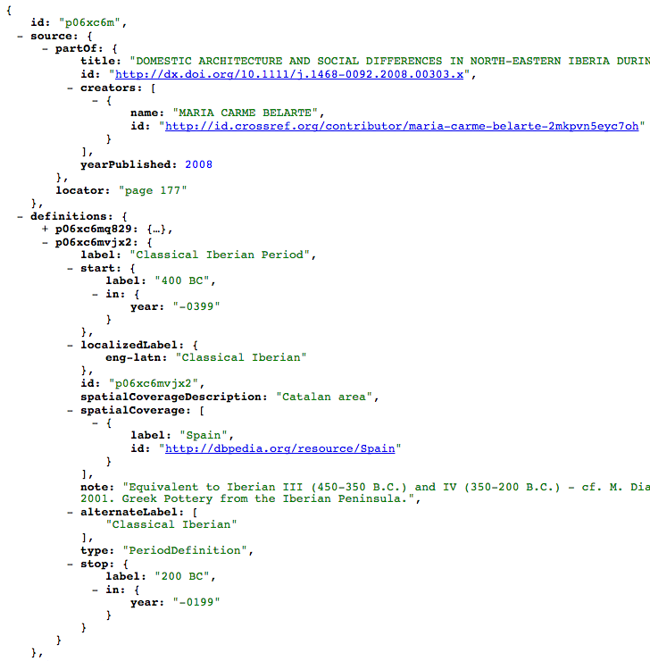
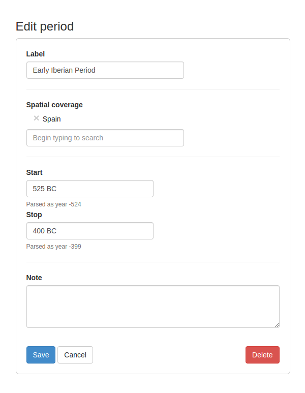

The PeriodO period gazetteer collects definitions of time periods made by archaeologists and other historical scholars. In constructing the gazetteer, we sought to make period definitions parsable and comparable by computers while also retaining the broader scholarly context in which they were conceived. Our approach resulted in a dataset of period definitions and their provenances that resemble what data scientists working in the e-science domain have dubbed “nanopublications.” In this paper we describe the origin and goals of nanopublications, provide an overview of the design and implementation of a database of period definitions, and highlight the similarities and differences between the two.
Scholars who study the past divide historical time into periods: they periodize. Periodization reflects scholars’ judgments about change over time. A period is an extent of time during which some phenomenon of interest—for example, the production of a particular style of pottery—stayed relatively stable in comparison with the times preceding and succeeding it. Because these phenomena occur in space as well as time, periods have spatial extent in addition to temporal extent. When a scholar defines a period, she gives a name to a spatiotemporal region of the past.
The PeriodO period gazetteer collects definitions of time periods made by archaeologists and other historical scholars. In constructing the gazetteer, we sought to make period definitions parsable and comparable by computers while also retaining the broader scholarly context in which they were conceived. Our approach resulted in a dataset of period definitions and their provenances that resemble what data scientists working in the e-science domain have dubbed “nanopublications” . In this paper we describe the origin and goals of nanopublications, provide an overview of the design and implementation of a database of period definitions, and highlight the similarities and differences between the two.
Nanopublication is an approach to publishing research in which individual research findings are modeled as structured data in such a way that they retain information about their provenance. This is in contrast to both traditional narrative publishing, where research findings are not typically published in a structured, computer readable format, and “data dumps” of research findings which are typically published without any embedded information about their production. The nanopublication approach is motivated by a desire to publish structured data without losing the wider research context and the benefits of traditional scholarly communication .
Nanopublication emerged from a context of data-intensive sciences like genomics and bioinformatics where recent advances in computational measurement techniques have vastly lowered the barrier to collecting genetic sequencing data. As a result, millions of papers have been published with findings based on these new computational methods. However, the reported results are almost always published in the form of traditional narrative scholarly publications . While narrative results can be read and understood by humans, they are not so easily digested by computers. In fields where computationality has been the key to the ability to ask new and broader questions, it should be the case that research results are published in such a way that they are able to be easily parsed, collected, and compared by computer programs and the researchers who use them.
On the occasions when research data are released and shared, they are often distributed on their own, stripped of their necessary context within a broad research environment (the identity of the researchers, where and how this research was conducted, etc.). In this case, the pendulum has swung too far in the other direction. In the service of creating and sharing discrete datasets, the published results have been stripped of their provenance and their position within the wider scholarly endeavor that culminated in their publication. This contextual information is crucial for consumers to determine the trustworthiness of the dataset and learn about the broader project of research from which they resulted.
Nanopublications offer a supplementary form of publishing alongside traditional narrative publications. They consist of three parts, all representable by RDF graphs:
An assertion (a small, unambiguous unit of information)
The provenance of that assertion (who made that assertion, where, when, etc.)
The provenance of the nanopublication itself (who formed or extracted the assertion, when, and by what method)
By representing their research in nanopublications alongside their narrative reports, researchers can publish their data in such a way that they remain within their human context while also being easily digested by computer programs.
Authors are encouraged to include the smallest unambiguous pieces of information as the assertions at the center of a nanopublication. This enables statements of the same fact to be connected with different sources of provenance, thereby potentially augmenting the ability of consumers to judge the quality of that assertion. Groth et al. call the collection of nanopublications all referring to the same assertion “S-evidence,” and cite the potential benefits of the ability to automatically connect the findings across research publications.
Several European repositories of bioinformatic data have begun to publish their contents as nanopublications, including the Biosemantics Group, neXtProt, and DisGeNET. While the nanopublication approach has seen success in bioinformatics, it has not yet spread to other disciplines, even though non-scientific fields have demonstrated the benefits of making information computable for purposes of retrieval and analysis.
Kuhn et al. observe that even knowledge that cannot be completely formally represented can benefit from the nanopublication approach, including vague or uncertain findings in science. We agree, but we have taken this approach—publishing individual assertions from already published works along with their provenance—in a project that deals with pieces of information that are neither testable nor falsifiable. We have demonstrated the feasibility and utility of creating nonscientific nanopublications in a project called PeriodO.
In their work, archaeologists and historians frequently refer to time periods such as “Classical Iberian Period” or the “Progressive Era.” These time periods are shorthand representations of commonly referenced segments of time and space. While time periods might have commonly understood definitions, they are scattered throughout myriad publications and are often treated as shared, assumed knowledge. This leads to difficulty and repeated effort when scholars want to visualize their data in space and over time, which requires mapping these discursive period labels to discrete spatiotemporal ranges .
For the PeriodO project, we compiled thousands of definitions of time periods from published sources within the fields of archaeology, history, and art history. We mapped these time periods to a consistent, standardized data format and published them as linked open data so that future scholars might cite these contextualized definitions instead of creating their own ad-hoc periods. Users are able to proposal additional period definitions or change existing ones through the PeriodO interface. All proposed and accepted changes are stored, and each period definition has a history of patch submissions and approvals.
PeriodO models a scholarly assertion about the name and spatiotemporal extent of a period as a period definition. The basis of a period definition consists of text taken from the original source indicating the name of the period, its temporal range, and the geographical region to which it applies. Multiple period definitions from the same source are grouped into a period collection. For example, the article “Domestic Architecture and Social Differences in North-Eastern Iberia during the Iron Age (c.525–200 BC)” includes the following sentence:
For the Catalan area, the complete system with the four above-mentioned categories is not as clearly documented before the fourth century as it is during the Classical Iberian Period (400–200 BC), although differences in the size of the sites, as well as the specialization of the functions of some settlements, can be already detected during the Early Iberian Period (525–400 BC).
This sentence contains two assertions defining period extents, so in PeriodO it is modeled as two period definitions. The first definition has the label “Classical Iberian Period” and its start and end points are labeled as “400 BC” and “200 BC” respectively. The second definition has the label “Early Iberian Period” and its start and end points are labeled as “525 BC” and “400 BC” respectively. The spatial extent of both definitions is labeled as “Catalan area”. Note that all of these labels are taken verbatim from the source text and should never change.
Because they come from the same source, these two period definitions are grouped into a period collection. The bibliographic metadata for the source article is associated with this period collection. (In the event that a source defines only a single period, then the period collection will be a singleton.) Note that belonging to the same period collection does not imply that period definitions compose a periodization. A periodization is a single coherent, continuous division of historical time, each part of which is labeled with a period term. A period collection, on the other hand, is simply a set of period definitions that share the same source. When the period definitions in a period collection do compose a periodization, this can be indicated through the addition of additional statements relating the period definitions to one another.
Because source languages, dating systems, and naming of geographical regions can vary widely, labels taken verbatim from source documents are insufficient for indexing and visualization period definitions in a uniform way. Thus the rest of the PeriodO data model consists of properties added by the PeriodO curators to normalize the semantic content of these textual labels. First, all periods originally defined in a language other than English are given an alternate English-language label. When a period definition was originally defined in English, the alternate label may make make minor changes for consistency. For example, the Belarte’s definition of the “Classical Iberian Period” period is given an alternate label of “Classical Iberian,” removing the word “Period” for brevity and consistency with other definitions. Next, the specification of temporal start and end points is standardized by adding ISO 8601 lexical representations of (possibly proleptic) Gregorian calendar years: -0399 for “400 BC” and -0199 for “200 BC”. Finally, descriptions of spatial extent are normalized by adding references to “spatial things,” typically modern nation-states. In this case both definitions are linked to the spatial thing identified by http://dbpedia.org/resource/Spain. The complete PeriodO representation in JSON of Belarte’s collection of period definitions is given in .

We have taken pains to make it easy to work with the PeriodO dataset. In particular, we have tried to make the PeriodO dataset easily usable by developers who do not use an RDF-based tool stack. The PeriodO dataset is published as JSON, which is easily parsed using standard libraries in most programming environments including, of course, web browsers. But while JSON provides an easy and convenient way to work with the PeriodO dataset by itself, we expect that many users will want to combine the PeriodO dataset with the growing amount of scholarly Linked Data being published. Thus we take advantage of the recent W3C Recommendation of JSON-LD to also make the PeriodO dataset available as Linked Data. By providing a JSON-LD context for the the PeriodO dataset, we make it usable within an RDF-based stack.
The JSON-LD context maps relationships between PeriodO entities to terms from RDF vocabularies. Of these, the most important are SKOS , the DCMI Metadata Terms , and OWL-Time . The human-readable labels for a PeriodO definition are mapped to the SKOS prefLabel and altLabel properties, implying that a PeriodO period definition can be interpreted as a SKOS Concept. The relationship between a period definition and the period collection to which it belongs is mapped to the SKOS inScheme property, implying that a period collection is a SKOS ConceptScheme. The relationship between a period collection and its source is mapped to the DCMI source term, and the various properties in the bibliographic description of the source are also mapped to the appropriate DCMI terms. Finally, the relation between a period definition and its geographical extent is mapped to the DCMI spatial term.
The relationships between a period definition and the start and end of its temporal extent are respectively mapped to the OWL-Time intervalStartedBy and intervalFinishedBy properties. This implies that a period definition, in addition to being a SKOS Concept, is also an OWL-Time ProperInterval (an interval of time having non-zero duration). Importantly, this also implies that the start and end of a period definition’s temporal extent are themselves ProperIntervals, not points or instants. This is important because the beginnings and endings of historical periods can never be precisely determined. In the example of the Classical Iberian Period given above, both the beginning and the end of the period are interpreted as intervals with a duration of one year. Interpreting period starts and ends as ProperIntervals also allows us to make a distinction between the intervals themselves and their descriptions. The intervals themselves are not precisely specifiable, but we can create pragmatic OWL-Time DateTimeDescriptions of them for the purposes of comparison and visualization.
The start and end of a period definition’s temporal extent are themselves intervals with their own starts and ends, so temporal extent can be associated with a maximum of four values. This is interoperable with other proposed representations of fuzzy, imprecise, or uncertain temporal extents, such as the four start, stop, earliest, latest keys proposed for GeoJSON-LD or the four s, ls, ee, e properties proposed for Topotime . In the current PeriodO data set these four properties only have (ISO 8601) year values, because none of our sources specified endpoints at a more granular level than year. However, we expect to have finer-grained values as we add periodizations of more recent history. At that point we will need to decide upon a unit of representation that makes it simple to compare intervals defined at different levels of granularity.
The start, latest start, earliest end, end approach enables us to represent the most common patterns for defining periods found in our sources. For example a period defined as starting “3000 B.C. (+/- 150 years)” and ending “about 2330 B.C.” can be represented with three values: -3149, -2849, and -2329. Some proposals for representing fuzzy, imprecise, or uncertain intervals, such as Topotime also supports the specification of separate curves for the start interval and end interval. Kauppinen et al. propose a method for setting such curves in order to maximize precision and recall with respect to temporal relevance judgments made by experts. We have chosen not to support these more complex representations at this time because we are focused primarily on representing periods as defined in textual sources. Natural language is already a compact and easily indexable way to represent imprecision or uncertainty. Rather than imposing an arbitrary mapping from natural language to parameterized curves, we prefer to maintain the original natural language terms used. However if scholars begin defining periods with parameterized curves (which is certainly possible) then we will revisit this decision.
In addition to mapping relationships to well-known vocabularies, interpreting PeriodO as Linked Data requires a way to assign URLs to period collections and definitions. As shown in , period definitions and period collections in the JSON representation of the PeriodO data are given short identifiers: p06xc6mvjx2 identifies the definition of the Classical Iberian Period, and p06xc6m identifies the collection to which it belongs. But these identifiers are only useful within the context of the PeriodO dataset; they are not guaranteed to be unique in a global context and, unless one already has the PeriodO data, one cannot resolve them to obtain representations of the entities they identify. URLs, on the other hand, are globally unique and can be resolved using HTTP to obtain representations; this is the core concept behind Linked Data. So, we need a way to turn the short PeriodO identifiers into URLs.
To turn PeriodO identifiers into URLs we rely on the ARK identifier scheme and the EZID service provided by the California Digital Library (CDL). First, we include in the JSON-LD context a @base value specifying the base URI (http://n2t.net/ark:/99152/) to use when interpreting the PeriodO dataset as Linked Data. This allows the short PeriodO identifiers to be interpreted as URLs; for example p06xc6mvjx2 is interpreted as a relative reference to the URL http://n2t.net/ark:/99152/p06xc6mvjx2. The host of this URL (n2t.net) is the registered name of the CDL’s Name-to-Thing resolver, which is similar to other name resolution services for persistent URLs such as PURL. We have registered with the EZID service a single ARK identifier (ark:/99152/p0) with the URL of the HTTP server currently hosting the PeriodO dataset. Thus any request to a URL starting with http://n2t.net/ark:/99152/p0 will be redirected to that server. An HTTP GET to http://n2t.net/ark:/99152/p0d.jsonld will return the entire dataset, while GETting (for example) http://n2t.net/ark:/99152/p06xc6mvjx2.jsonld will return a JSON-LD representation of Belarte’s definition of the Classical Iberian Period.
We created the PeriodO dataset based on the same core concerns of nanopublication authors: to extract, curate, and publish small, computable concepts from their broader sources while still preserving their provenance. A nanopublication is made up of an assertion, the provenance of that assertion, and the provenance of the nanopublication itself. In PeriodO, these elements come in the following pieces of information:
Assertion: The definition of a period
Provenance: The source this period was derived from. This may be a citation of a printed work or a URL for a resource hosted on the web.
Provenance of nanopublication: The history of the period definition within the PeriodO system, including the date it was added, the identity of the person who submitted or changed it, and the identity of the person who approved additions or changes.
above contains two assertions with the same provenance.
While these concepts readily map to the nanopublication scheme, we faced several challenges during our creation of the dataset due to its interpretive nature.
Unlike data such as measurements of genomic expression or statements of biological causality, much of the information produced in humanist disciplines is not testable or falsifiable. The PeriodO dataset is no different in this regard. Compare the assertion that “malaria is transmitted by mosquitoes” to the one that “there is a period called the Late Bronze Age in Northern Europe, and it lasted from about 1100 B.C. to 500 B.C.” Malaria and mosquitoes are two well-defined entities that exist within strict taxonomies reflecting the physical world. “Mosquito” and “malaria” are terms that point to positions within these taxonomies. Conversely, the “Late Bronze Age” is a purely discursive construct. Whereas a relationship between mosquitoes and cases of malaria existed prior to its observation by humans, there was no discrete entity called the “Late Bronze Age” before it was coined by those studying that time and place. Consequently, one cannot disprove the idea that there was a time period called the Late Bronze Age from around 1100 B.C. to 500 B.C.; one can only argue that another definition has more credence based on non-experimental, discursive arguments.
Kuhn et al. are concerned that requiring formal representation for all scientific data published as nanopublications “seems to be unrealistic in many cases and might restrict the range of practical application considerably.” We have found the same to be true with our dataset, and argue that the form and scope of nanopublication assertions should ultimately be determined by the practical needs of the researchers who use them. If nanopublications are to expand beyond computational scientific fields, the nature and scope of assertions will vary between applications based on the practical concerns of researchers. For computational biologists, the forms of individual assertions reflect the need to connect, consolidate, and assess trillions of measurements scattered throughout a rapidly growing body of research findings. The goal is to create a global, connected knowledge graph that can be used as a tool for scientists to guide new discoveries and verify experimental results. For other domains, such as the definition of time periods, the extraction and publication of pieces of information is practically beneficial even if the resulting assertions are not unambiguous or chainable.
There is no reason why the assertions at the center of nanopublications must be atomic, unambiguous, and falsifiable. These requirements only matter within certain contexts, such as the connective application required by the practical needs of computational scientists. We must recognize that even discursive data that cannot be combined in such chains of signification can be usefully processed by computer programs.
In the PeriodO context we are not concerned with making an exhaustive taxonomy of “correct” periods or facilitating the “discovery” of new periods (which is a non-sequitur—there are no periods that exist in the world that are awaiting discovery by some inquiring historian or archaeologist). Rather, we are interested in enabling the study and citation of how and by whom time has been segmented into different periods. Our approach to modeling assertions has been guided by this concern.
In some sense, the nanopublication focus on provenance is even more important for non-scientific datasets, since the assertions made therein are so critically dependent on their wider discursive context. Because subjectivity is inextricable from these sorts of unfalsifiable relationships, it is important to preserve their provenance and original context in order to judge their quality, trustworthiness, and usefulness.
Another divergence of the PeriodO dataset from traditional nanopublications is the unavoidable curatorial work that was necessary to extract practically useful assertions from textual period definitions. In all of the applications of nanopublications we found, the published assertions typically appeared in the form of measurements or well-defined relationships between discrete entities. These are types of data which humans or computers can easily and reliably extract from research findings. Our dataset required explicit curatorial decisions: a time period exists within a certain spatiotemporal context, and there is no sure way to discretely, accurately, and unambiguously model such boundaries. Our approach was to review the practical needs of the types of users we imagine will use the dataset, and then to make and document our curatorial decisions.
While a human might be able to have a nuanced understanding of temporary and ever-shifting political boundaries and the uncertain and partially arbitrary precision suggested by “around the beginning of the 12th century BC,” we cannot assume the same of computers. Therefore, as we started to collect data, we began by considering the basic characteristics of a dataset that would be necessary to accomplish automated retrieval and comparison tasks that we believed were most important. These tasks included:
Finding all periods within a certain geographic area. (“What time periods have scholars used in Northern Europe?”)
Finding all periods within a certain span of time. (“What time periods have been used to describe years between 100AD to 500AD?”)
Finding how the definition of periods have differed across time/authors, or finding contested period definitions. (“How have different authors defined the Early Bronze Age?”)
Finding periods defined for different languages. (“What time periods have both Russian and Spanish names?”)
Based on these decisions, we needed to impose some consistent amount of specificity upon the temporal and spatial coverage of period definitions. The resulting data model is discussed above.
To maintain a standardized format for all period definitions, we build a simple grammar and parser for period labels that covered the vast majority of our sample data. The parser takes in a string like “c. mid-12th century” and outputs a JSON string consistent with our data model. This parser also gives a naïve interpretation to descriptions like “mid-fifth century”, assigning them to the third of the epoch described according to the conventional segmentation of “early” “mid” and “late.” “Mid-fifth century” would, then, be parsed as the range of years 401 to 434. Similarly, we created an autocomplete interface to modern political entities to allow users to enter spatial coverage. These techniques result in a practical approximation of spatiotemporal coverage rather than a complete, unambiguous representation.

After the initial step of gathering period definitions, we hope to gather information on their citation and use. This would include both studying the historical use of attributed period definitions as well as tracking the citation of PeriodO period identifiers going forward.
We also will consider publishing our dataset in a fashion that is compatible with the nanopublication ontology. We will consult the nanopublication community to assess the most appropriate way to undertake this mapping.
Ultimately, nanopublications are a way to balance the needs of computers for uniformity in data modeling with the needs of humans to fully understand and judge information based on context. As scholars of all disciplines continue to integrate computers and computational methods into their work, the need for this balance continues to grow. This is as true in the humanities and social sciences as it is in the natural sciences. However, different fields have different practical concerns, and their use of nanopublications should reflect this fact. Implementors of nanopublication systems (and linked data-producing systems as a whole) should worry about fitting data into precise, minutely-defined models only insofar as it is practically useful for their intended users to do so.
Nanopublication is an important trend which accounts for data’s creation within a wider scholarly context. In this way, it echoes old ideas about hypertext which respect the importance of provenance, authorship, and attribution . We hope our work shows that this approach is relevant and feasible even to fields outside of experimental, observable sciences.
Nelson, Theodor Holm. 1999. Xanalogical Structure, Needed Now More Than Ever: Parallel Documents, Deep Links to Content, Deep Versioning, and Deep Re-Use. ACM Computer Survey 31, 4es (December 1999). http://dx.doi.org/10.1145/345966.346033
Gillies, Sean. 2014. Event-like GeoJSON Features Using JSON-LD. https://github.com/geojson/geojson-ld/blob/98f6661ceeba77f135b7d01c5018cd320887b734/time.md
Meeks, Elijah. 2013. Topotime v 0.1 specification. https://github.com/ComputingPlace/Topotime/wiki/Topotime-v-0.1-specification/e09a4d4e27f5cf8a6f172d45b09f6519ff5cfe42
Kauppinen, Tomi, Glauco Mantegari, Panu Paakkarinen, Heini Kuittinen, Eero Hyvönen, and Stefania Bandini. 2010. Determining Relevance of Imprecise Temporal Intervals for Cultural Heritage Information Retrieval. International Journal of Human-Computer Studies 68 (9): 549–60. http://dx.doi.org/10.1016/j.ijhcs.2010.03.002
Barend Mons and Jan Velterop. 2009. Nano-publication in the e-science era. Proceedings of the Workshop on Semantic Web Applications in Scientific Discourse (SWASD 2009). http://ceur-ws.org/Vol-523/Mons.pdf
Paul Groth, Andrew Gibson, and Jan Velterop. 2010. The anatomy of a nanopublication. Information Services and Use 30, 1-2 (2010), 51–56. http://dx.doi.org/10.3233/ISU-2010-0613
Barend Mons et al. 2011. The value of data. Nature Genetics 43, 4 (January 2011), 281–3. http://dx.doi.org/10.1038/ng0411-281
Paul Groth, Erik Schultes, Mark Thompson, Zuotian Tatum, and Michel Dumontier, eds. 2013. Nanopublication Guidelines. Concept Web Alliance Working Draft. http://www.nanopub.org/2013/WD-guidelines-20131215/
Tobias Kuhn, Paolo Emilio Barbano, Mate Levente Nagy, and Michael Krauthammer. 2013. Broadening the Scope of Nanopublications. In The Semantic Web: Semantics and Big Data. 487–501. http://dx.doi.org/10.1007/978-3-642-38288-8_33
Adam Rabinowitz. 2014. It’s about time: historical periodization and Linked Ancient World Data. ISAW Papers 7.22. http://dlib.nyu.edu/awdl/isaw/isaw-papers/7/rabinowitz/
Maria Carme Belarte. 2008. Domestic architecture and social differences in north-eastern Iberia during the Iron Age (c.525-200 BC). Oxford Journal of Archaeology 27 (2008), 175–199. http://dx.doi.org/10.1111/j.1468-0092.2008.00303.x
Manu Sporny, Dave Longley, Gregg Kellogg, Markus Lanthaler, and Niklas Lindström. 2014. JSON-LD 1.0: A JSON-based Serialization for Linked Data. W3C Recommendation. http://www.w3.org/TR/json-ld/
Alistair Miles and Sean Bechhofer. 2009. SKOS Simple Knowledge Organization System Reference. W3C Recommendation. http://www.w3.org/TR/skos-reference/
DCMI Usage Board. 2012. DCMI Metadata Terms. http://dublincore.org/documents/dcmi-terms/
Jerry R. Hobbs and Feng Pan. 2006. Time Ontology in OWL. W3C working draft. http://www.w3.org/TR/owl-time/
J. Kunze and R. Rodgers. 2013. The ARK Identifier Scheme. IETF Internet-Draft. https://tools.ietf.org/html/draft-kunze-ark-18
Joan Starr, Perry Willett, Lisa Federer, Claudia Horning, and Mary Bergstrom. 2012. A Collaborative Framework for Data Management Services: The Experience of the University of California. Journal of eScience Librarianship 1, 2 (October 2012), 109–114. http://dx.doi.org/10.7191/jeslib.2012.1014